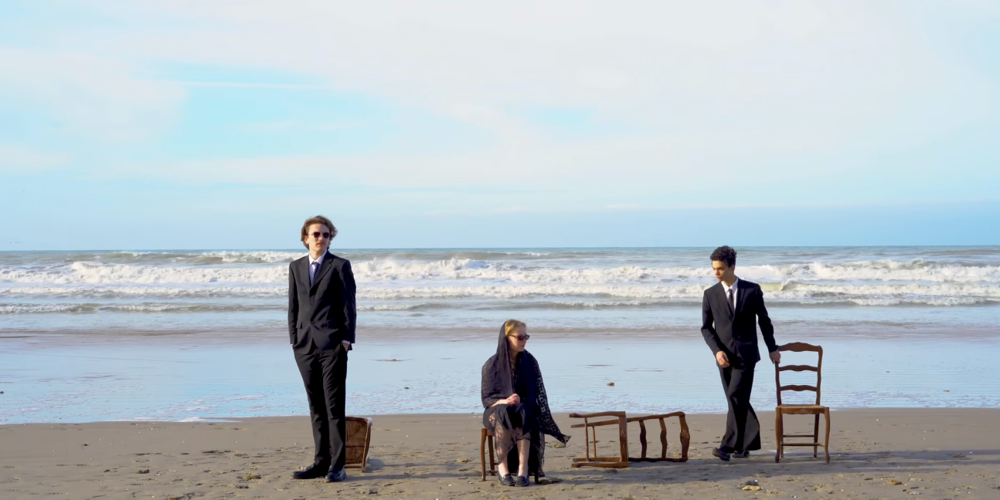

Étudiant ingénieur du son
Jules
Frémondière
3iS · Promotion 2026
Du plateau au mix : captation, repair, design, composition à l'image. Une approche technique et rigoureuse du son, nourrie par une pratique artistique continue — musique, montage, création visuelle.
jules.fremondiere@3is.frMixage
Écoute active, Pro Tools.
Composition
Créativité, Live 12.
Repair
Nettoyage, RX 10.
Recording
Sound Devices, Couples.
Formation 3iS
Ingénierie son & design
Certif. Avid
Pro Tools Fundamentals 101
Logiciels
Pro Tools, Live, FL
Livrables
Mix, design, plateau
Live Mix
Routing Behringer X32
Europe
Danse (Boris Charmatz)
3iS - Institut International
Bachelor Son à l'image / Ingénieur du son
Prise en main de matériel professionnel, Intervenants passionnés, Détermination.

Service Civique / Césure
Projet Court Métrage grâce à l’association Thermogène Média.
▶ Voir le projet vidéo
BAC STI2D ITEC
Esprit d’équipe, Innovation et Informatique, Réflexion technique.
Autodidacte & Exploration AV
- ›Composition musicale
- ›Montage vidéo

Danseur Hip-Hop/Contemporain
Tournée Européenne avec le chorégraphe Boris Charmatz.

/// Projets et Collaborations

Je suis la fumée...

L'Étranger (A. Camus)

Instable

Ouragan

Srh - qutumeregardes

Capharnaüm

Désaccordés

Long Day

Sacré Graal
ifmemorieswasdrumandbass.wav
Sample de guitare organique sculpté sur des breaks drum and bass tranchants et dynamiques.
alwaysthinking.wav
Découpes vocales spatialisées, nappes de synthés planantes et traitement analogique chaleureux.
2bad.wav
Arpèges de guitare mélancoliques couplés à des synthés sombres et une rythmique trap percutante.
issues.wav
Remix électronique aux cadences jungle survitaminées, sub-basses rugueuses et cuts précis.
unknown.wav
Évolution d'arpèges électroniques modulaires, sound design aérien et textures synthétiques.
rover.wav
Texture spatiale planante, nappes éthérées et sub-bass trap percutante.
wordsnight.wav
Mélodie pop nocturne chaleureuse aux accords feutrés et drum kit lo-fi.
Aucune composition ne correspond à ce filtre.
Reference_Library
Séries / Films


/// One Battle After Another - Session Reconstruction
↳ Récupération de la voix via IA puis restauration sous iZotope RX10.
↳ Composition originale sur Ableton Live 12, mixage orienté dynamique.
↳ Synthèse granulaire et impacts créés sur-mesure (Arturia Pigments).
↳ Travail de synchro et textures organiques, en partant d'une prise de son moyenne.
↳ Grosse recherche d'ambiances et de sons de voitures, nettoyage spectral léger.